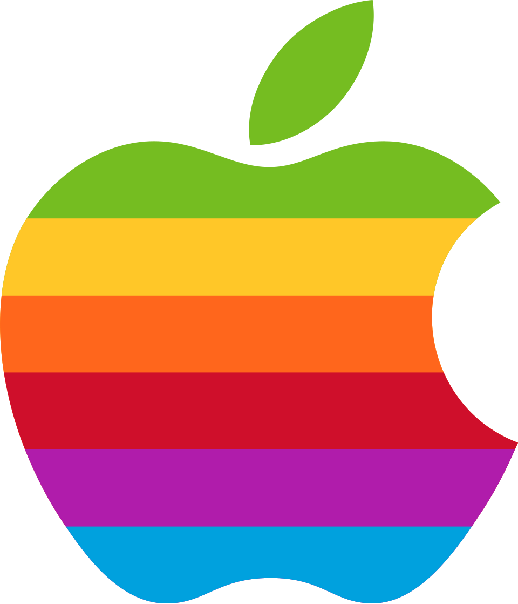

A1 · Step 2 — the ask (convo turn)
‹
Glad you’re here. Quick one —
Where did you find us? ■
Helps us reach more people like you.

App Store searchFacebook
TikTok
YouTube
Friends
Somewhere else
Convo idiom throughout: dim context types first, question lands heavy with the
purple ■, chips auto-advance on tap (selection haptic) — no CTA, no skip; “Somewhere else”
is the out. Logo tiles sit on white with a hairline so six brand colors don't shout over the ground.
Chip order shuffles per user; Somewhere else always last.
A2 · Tap beat — the answer “speaks”
‹
Glad you’re here. Quick one —
Where did you find us? ■
TikTok
The sent-message beat the funnel already uses: the picked chip becomes a purple
right-tail bubble (with its logo riding along), holds ~450ms, then the turn advances. No thank-you
card needed — the flow answers back on the next screen.
A3 · Step 3 — the echo answers back
‹
TikTok — good corner of the internet.
Now — meet Pep ■
Your guide in here. Pep turns your answers into your plan — and explains any number you ever wonder about.
Hi — I’m Pep! 👋
Wave back 👋
Per-source echo lines replace meetPep's static “Glad you're here.”:
App Store → Found us yourself — respect. · Instagram/TikTok/YouTube/Facebook → <Source> —
good corner of the internet. · Friends → Your friend has good taste. · Somewhere else →
However you got here — glad you did.